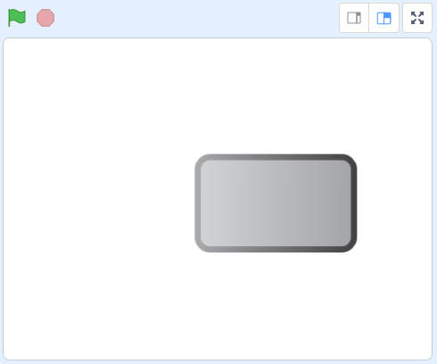
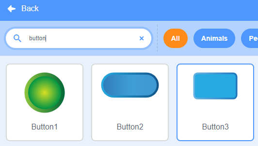
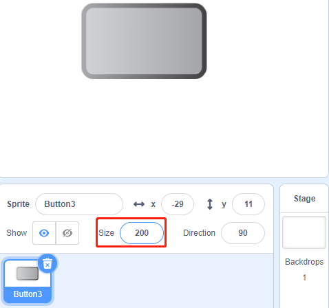
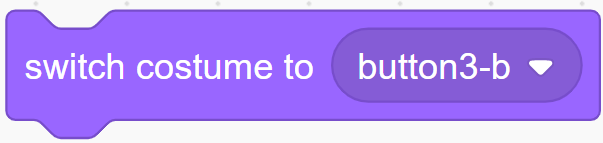
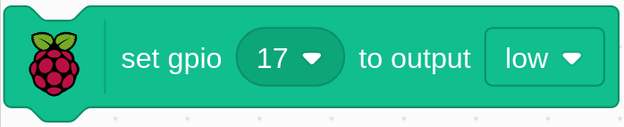
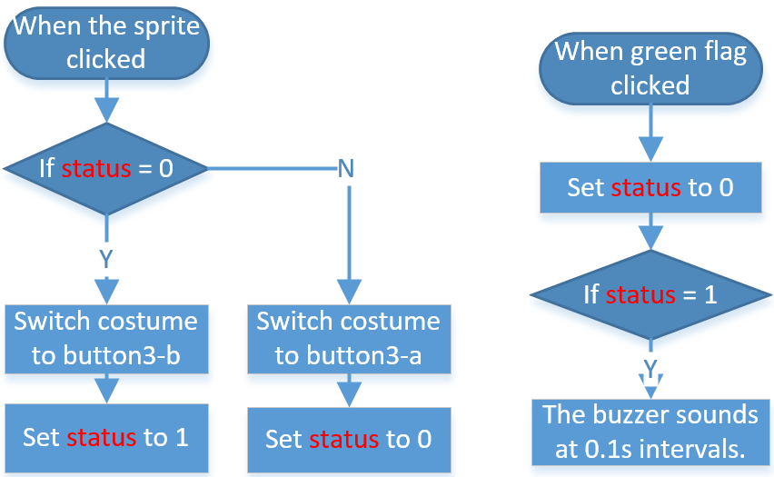

注釈
こんにちは、SunFounderのRaspberry Pi & Arduino & ESP32愛好家コミュニティへようこそ！Facebook上でRaspberry Pi、Arduino、ESP32についてもっと深く掘り下げ、他の愛好家と交流しましょう。
参加する理由は？
エキスパートサポート：コミュニティやチームの助けを借りて、販売後の問題や技術的な課題を解決します。
学び＆共有：ヒントやチュートリアルを交換してスキルを向上させましょう。
独占的なプレビュー：新製品の発表や先行プレビューに早期アクセスしましょう。
特別割引：最新製品の独占割引をお楽しみください。
祭りのプロモーションとギフト：ギフトや祝日のプロモーションに参加しましょう。
👉 私たちと一緒に探索し、創造する準備はできていますか？[ここ]をクリックして今すぐ参加しましょう！
1.7 ドアベル
今日はドアベルを作り、ステージ上のbutton3 spriteをクリックすると、ブザーが鳴ります。 もう一度クリックすると、ブザーが鳴り止みます。
必要な部品

回路を構築する

コードをロードして、何が起こるかを確認します
コードファイル( 1.7_doorbell.sb3 )をScratch3にロードします。
ステージ上の緑色の旗をクリックします。 ボタン3のspriteをクリックすると、青色に変わり、ブザーが鳴ります。 もう一度クリックすると、Button3 スプライトが灰色に戻り、ブザーが鳴り止みます。
Spriteに関するヒント
デフォルトのspriteを削除してから、Button 3 のspriteを選択します。
次に、サイズを200に設定します。
コードに関するヒント
{kind=link}
このブロックを使用すると、spriteのcostumeを切り替えることができます。
{kind=link}
gpio17をlowに設定して、ブザーを鳴らします。 high 設定するとブザーが鳴りません。
ここでは status スイッチを使用します。ここでは、コード全体を理解するのに役立つflowchartを使用します。
緑のフラグがクリックされると、status が最初に0に設定され、この時点でspriteがクリックされるのを待ちます。 button3 spriteをクリックすると、button-b costume（青）としてcostumeに切り替わり、status が1に設定されます。 メインプログラムが status を受信すると 1として、0.1秒間隔でブザーを鳴らします。 button3 をもう一度クリックすると、button-a costume（灰色）に切り替わり、status が再び0に設定されます。
